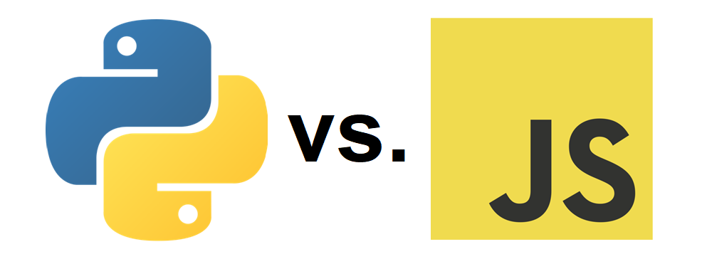

Usage Differences between Python and JavaScript
Last edit: April 6, 2023 By Jason Wong
JavaScript and Python are both top 10 popular programing languages in the world and are used for a wide range of applications. Because of their strengths and weakness, they are used for different purposes.
JavaScript
JavaScript is well-known as a front-end programing language,
meaning it is used for develop an application for the interaction with users, but not the data, like a reaction of a button or a text box.
Also, it means that JavaScript is commonly not used for back-end development,
the control on the server or database.
Web Development
JavaScript is mainly used for website development to control the behaviors of the website. It makes the website more flexible and interesting. For example, the website will pop up different content by clicking different buttons. In a website, JavaScript provides and create the interactions, like mouseover action and animations, and make it more user-friendly, like a game and go-top button.
Enter your guess between 1 and 100:
Node.js
Node.js is a operation environment, introducing in 2009,
that allow developers to run JavaScript on server side.
It makes developers possible to create a wide range of applications with JavaScript,
such as command-line tool, and desktop applications.
One of the advantages of Node.js is using JavaScript as a back-end programming language,
meaning that it is not require to use 2 languages for front-end and back-end to reduce the cost of development.
Also, it makes the programs faster and more efficient.
Here is a Youtube video talking about what Node.js can do:
Python
Python is one of the most popular programing languages because of easy to read.
Nowadays, Python is used in different ways, like artificial intelligence (AI), file management, and web crawling.
Compare with JavaScript, Python is better for handling data.
So, Python is commonly used for back-end development.
Data Science
Python is a well-known language for data science, as a lot of powerful open-source libraries like Pandas can be imported easily to manage the data. Because of the libraries used for web crawling, like BeautifulSoup, Python can not only used for data analysis, but also used for collecting data.
This is an example how to build a scatter plot by Python. From
www.kaggle.com/code/pmarcelino/comprehensive-data-exploration-with-python
Personal Desktop Applications
Python is one of the most beginner-friendly programing languages and it allows beginners to spend a short time to learn how to develop a program for personal-use, like file management.
For example, using the library “os”, the program can get all file name in giving folder path and change the file location by change the file name (file path).
Besides, since there are a lot of open-source libraries and great community, more and more things beginners can do,
like creating a bag of picture or gif, and writing word documents with pattern or repeating context.

Here is a 19 lines Python program to move all files to a single root folder.
Machine Learning
Python is also known as a machine learning language. Recently, AI drawing and AI chatting is very popular. In personal computer, Python can train a personal model to generate picture or chat by using libraries, like PyTorch.
Stable Diffusion webUI is the most famous AI drawing program which is using Python to build, source: github.com/AUTOMATIC1111/stable-diffusion-webui